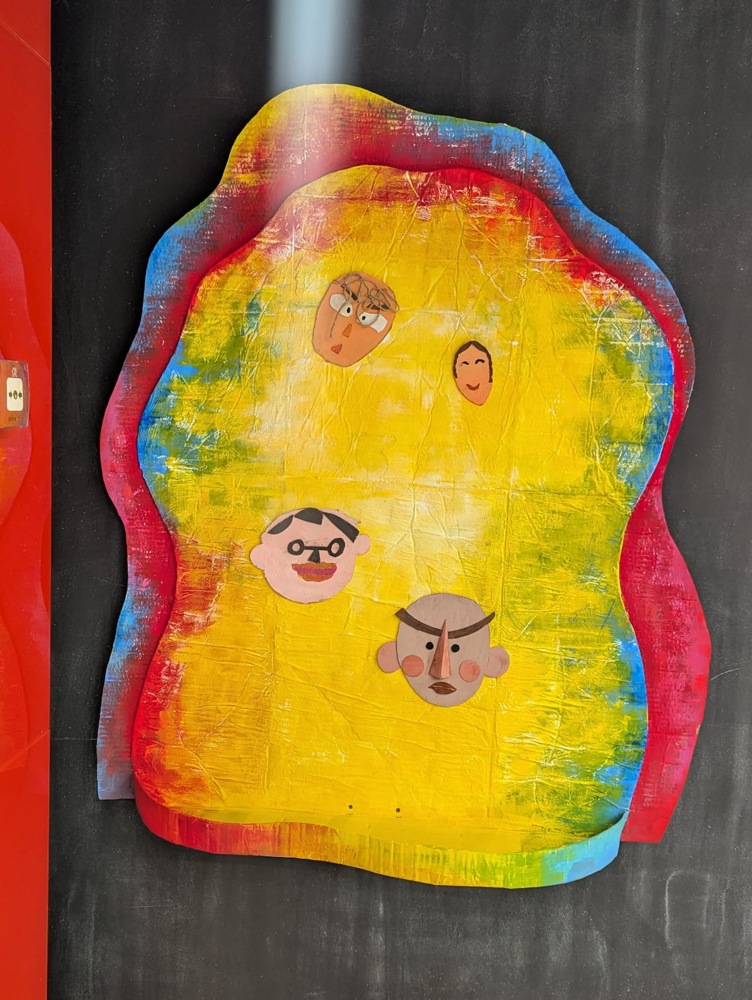
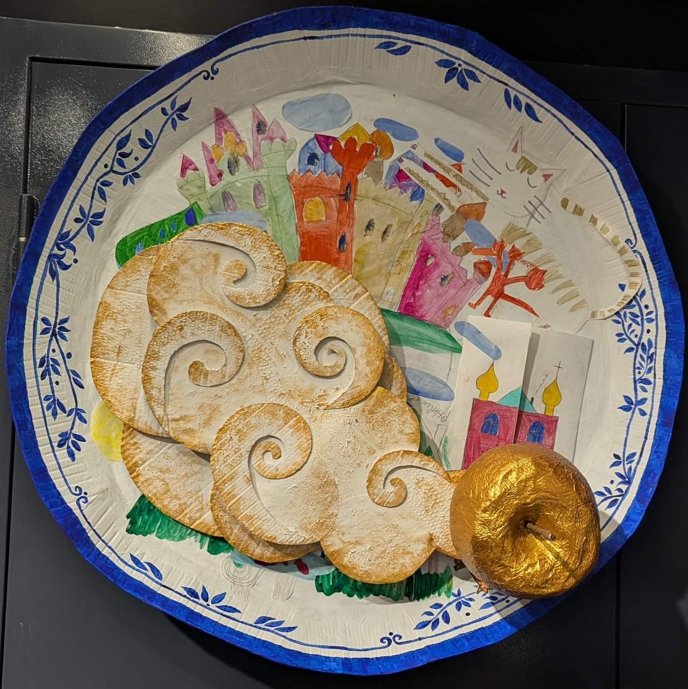
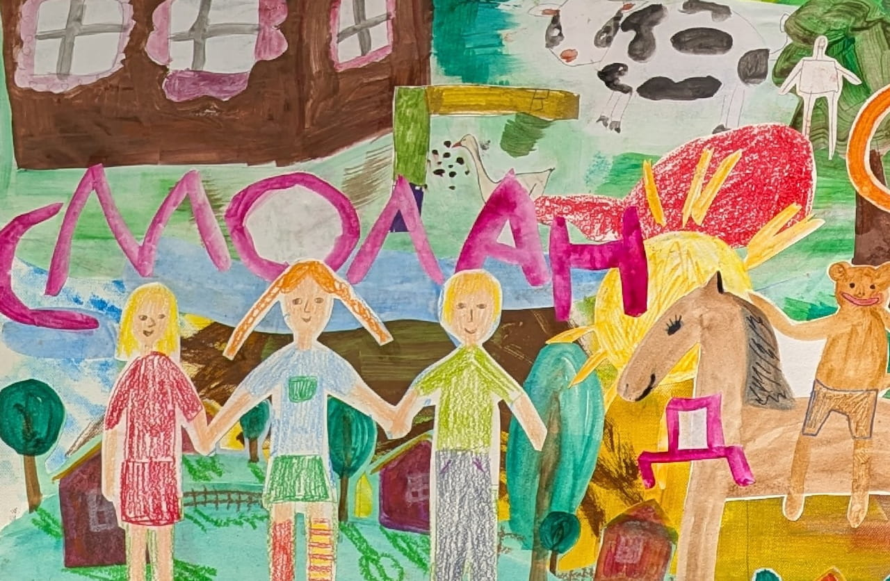
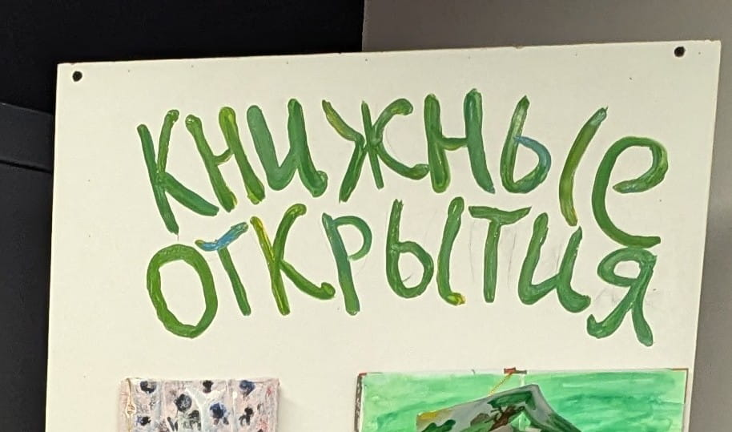

# Книжные открытия Выставка от детей для детей (а ещё детей, которые живут внутри взрослых) ## Семь дней чудес  В повести Анатолия Мошковского 1969 года школьник по имени Боря находит удивительный прибор: теперь он может управлять эмоциями и поведением любого человека... а вы можете сконструировать свою любую эмоцию -- прямо на этом стенде [чуть подробнее про книгу](http://t.me/skillsclub_kids/212) ## Вниз по волшебной реке  "Катись, катись, золотое яблочко, по волшебному блюдечку, покажи мне города и поля, покажи леса и моря...", покажи иллюстрации ребят из детского книжного клуба к неподражаемой сказке Эдуарда Успенского (этим яблоком действительно можно управлять -- попробуйте сами) ## Сказки Астрид Линдгрен  Действие сказок Астрид Линдгрен часто разворачивается *в уютных, утопающих в зелени*, как город Юнибакен озорной Мадикен, *в идиллических*, как город Лилльчёпинга юного сыщика Калле Блюмквиста, в то же время *консервативных*, как городок Пеппи Длинныйчулок, локациях. И это всё -- отголосок родной провинции Смоланд писательницы, где она выросла и родилась. Еще пару коротеньких фактов об Астрид Лингрен можно почитать [здесь](http://t.me/skillsclub_kids/213), ну а на этой картине ребята спрятали 9 портретов персонажей её книг. Найдёте? ## Если читательский дневник  ...то такой, чтобы как портал в волшебный мир, и страницы -- каждая, как живая локация в сказочной истории -- здесь дневники участников детского книжного клуба. [Мини мастер-класс, как сделать такую же "дверь"](http://t.me/skillsclub_kids/164)



